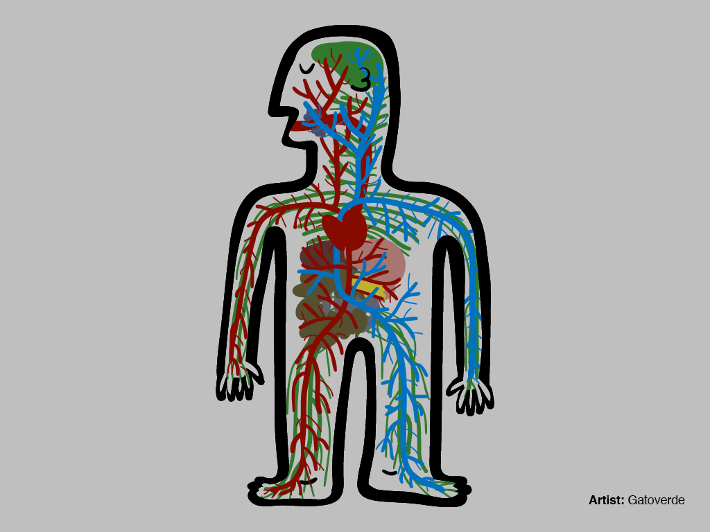
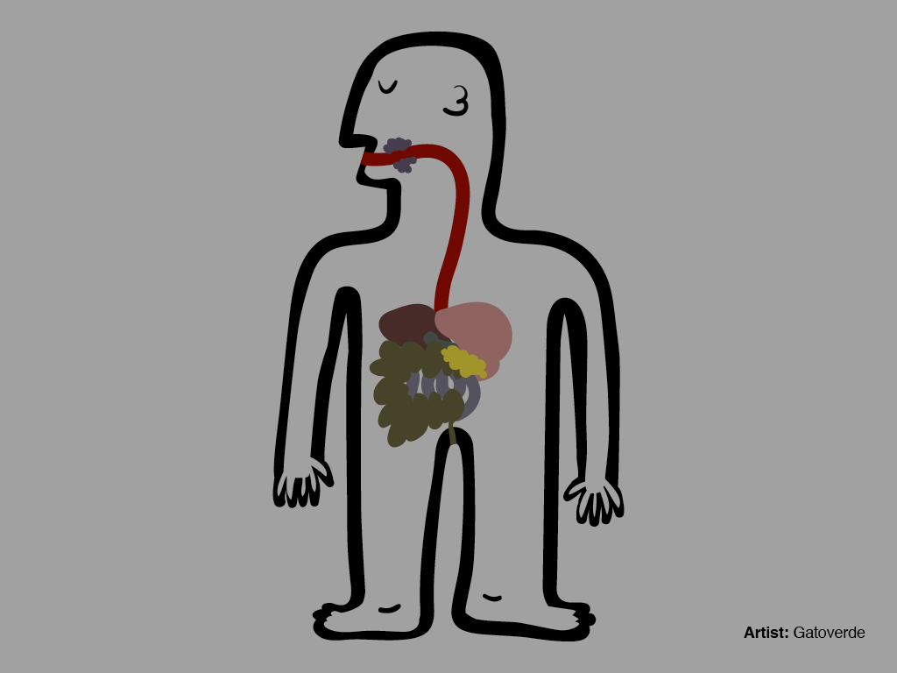
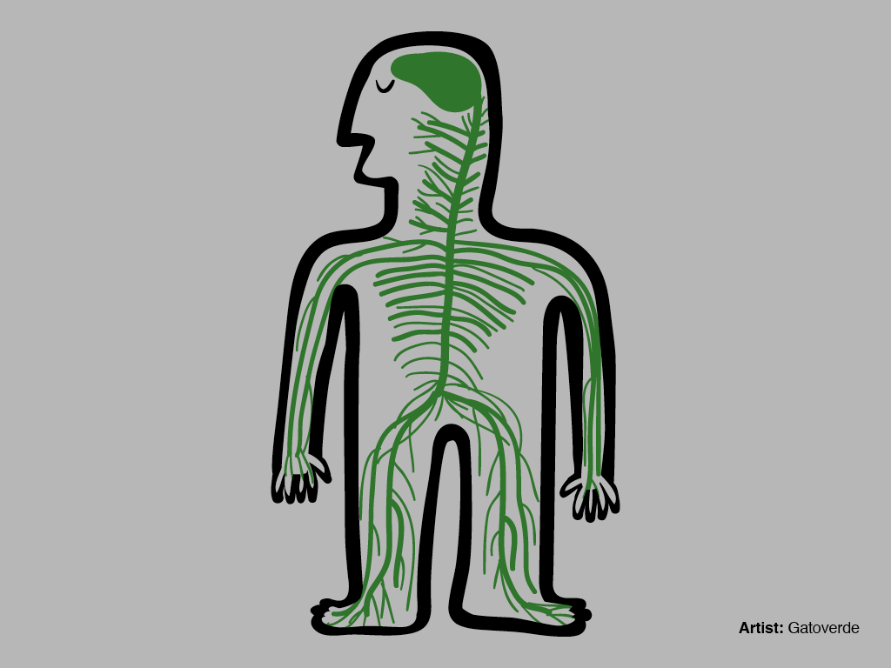
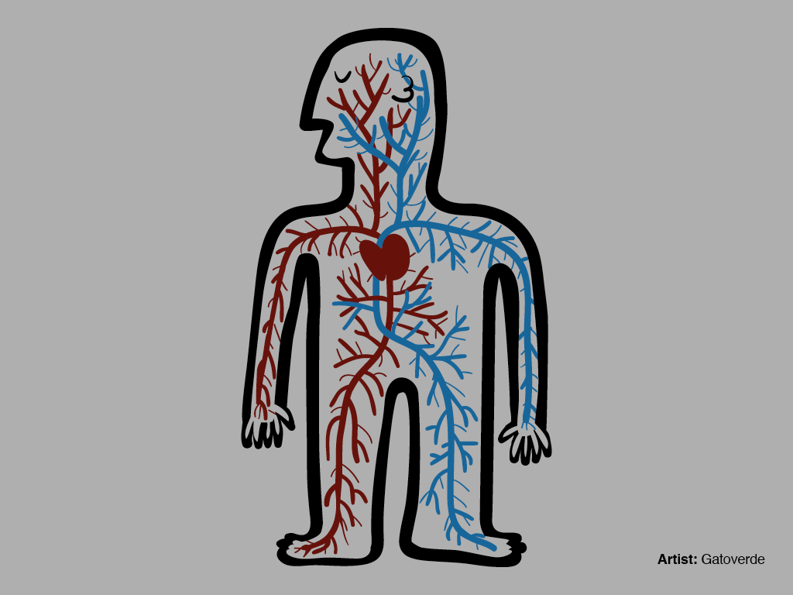
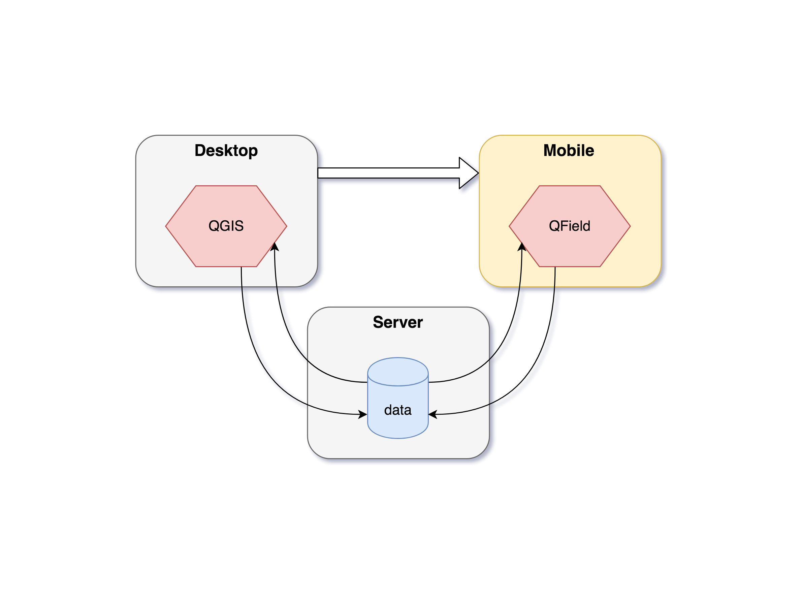
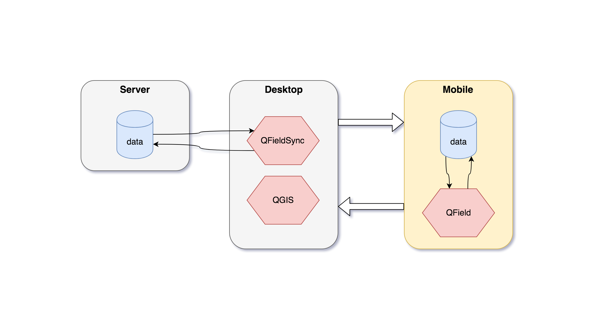

Weil die Daten draussen sind
QField, die Zukunft von QGIS auf mobilen Geräten
 MATTHIAS KUHN
MATTHIAS KUHN
@_mkuhn
@OPENGISch Co-Founder und CTO
@QGIS Kernentwickler
@QFieldForQGIS Hauptentwickler
Open source Geo-Daten Experten Made in Switzerland
QGIS, QField, PostGIS, Plugins, C++, Python, Android, Ili2DB, Webmapping, ...
@OPENGISch L[i|e]ben open source
Why QField?

Weil
Daten ausserhalb des Büros sind
Das fehlende Element im QGIS Ökosystem
Was ist QField?
Eine mobile App zur Datensammlung für QGIS
Minimalistische Nutzerschnittstelle. Optimiert für Touch
mit der kompletten Power von QGIS unter der Haube
Was kann ich mit QField machen?
Komfortable Datenvorbereitung auf QGIS Desktop einmalig.
Effizient mit den GIS Daten im Gelände arbeiten.
Was ist in QField?

QGIS Erfahrung
Für touch gemacht
Mächtige Features

QGIS Formulare
Drag and drop Formulare
Ausdrucksabhängige Sichtbarkeit
Attributrestriktionen (Constrainst)
Standardwerte
Photos aufnehmen

Digitalisieren und Bearbeiten
Punkte, Linien, Polygone
Z Werte
Schnappen
Internes oder externes GPS

Attributsuche
Durchsuchbare Layer definierbar
Im Anzeigeausdruck
Zum Suchergebnis zoomen
Welche Arbeitsabläufe sind möglich?

Der Forscher

Der einsame Ranger
Online (live) Editieren
Offline Editiern
Massgeschneiderte App
And action!
Kartenthemen
Restriktionen
Digitalisieren mit Photos
PDF Druck
Geometrien Editieren

Roadmap
Version 1.0 bald verfügbar
Deine eigene app
 Mach mit
Mach mit